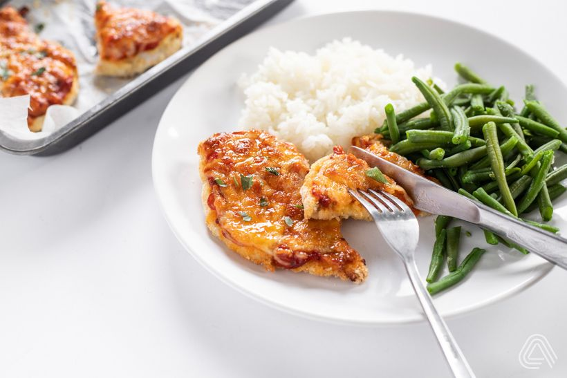

Kuřecí prsa s rýží a zeleninou

Porce: 1
Kalorie: 450 kcal
Bílkoviny: 40 g
Sacharidy: 50 g
Tuky: 10 g
Ingredience:
150 g kuřecích prsou
50 g basmati rýže
-
100 g zeleniny dle výběru (např. brokolice, paprika, mrkev)
1 lžička olivového oleje
Postup:
-
Kuřecí prsa osolte a opepřete, poté orestujte na pánvi
Rýži uvařte dle návodu na obalu
-
Zeleninu orestujte na olivovém oleji nebo uvařte v páře
Podávejte kuřecí prsa s rýží a zeleninou